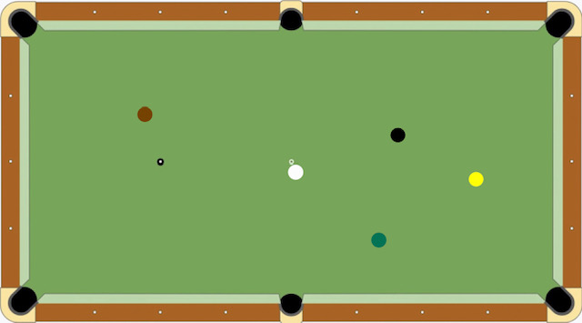
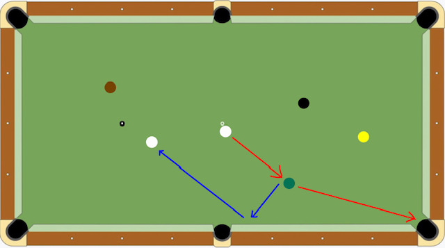

ダーツVSビリヤード
少数派でもビリヤードを続ける理由
ダーツVSビリヤード
皆さんはビリヤード派？ダーツ派？
どっち派でなくても、するなら...
この質問をすると多くの人が「ダーツ」と答えます。理由は「ビリヤードは難しそうだから」ですよね。はい。
ダーツは、狙ったところに刺さらなくても、とりあえず点が入るから楽しいですよね。わかる。。
- 狙ったところに当たらない
- 白球が色球に当たっても入らない
- そもそも構え方が難しい
難しいことだらけですよね。。これに関しては練習してどうにかするしかないんです。なので、ダーツ派が多いこととダーツのほうがとっつきやすいことは認めます。ダーツはの勝利です。ええ
なぜビリヤード？
結論：楽しいから
ありきたりな理由ですみません。僕が主にプレイするゲームは「ナインボール」というもので、１から順番に落として、最後に９を落としたら勝つ、あれです。
これがまた奥が深いんです。ただ落とせばいいというものではないんです。例えば、次の盤面を見てください。
白の球を撞(つ)いて「緑」「茶」「黒」「黄」の順に落としていきます。「ナインボール」はいかに早く「９(黄)」を落とすかが勝負です。つまり、ミスなく落とし続けられれば勝てるということです。よって、ただ、次の色の球を落とすのではなく、その球を落とした次の球の位置を把握し、落としやすい位置に白球をとどめることが重要になります。ここが難しい！！ 例えば...
「緑」を赤の軌道で落とすと、青の軌道に乗って白球は移動していきます。次に「茶」を落としたあと「黒」を落とすために、さらにその後「黄」を確実に落とすために...ということを考えれば、「茶」を落とした後の白球の位置は「中上のポケット周辺」もしくは「テーブルの中心ちょい下」がよいでしょう。
このように考えるのが面白い！二度と同じ盤面が来ない分、毎回毎回違ったことを考えるんです。そしてさらに、これがまた考えたように動かないし、入らないんですよ...だから練習が必要で、できることも増えてきて沼にはまっていきました。
ビリヤード歴
ビリヤード歴は５年くらいです。多くて週２回、１～２時間の練習なので、歴の割にはそんなにうまくないです。楽しく撞くのが一番なので、マイペースにやっています。
アマチュアのチーム戦が全国各地で開催されており、一時期はそちらに参加していました。近々機会があったらまたやりたいなぁ。